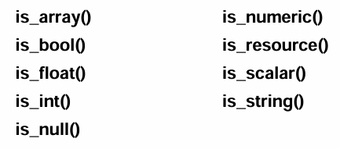

Security
An SQL injection attack occurs when an attacker tries to insert conditions into an SQL query in an attempt to expose or corrupt the data in the database.
The pattern for an SQL query is: SELECT * FROM users WHERE username = 'xyz' AND password = 'abc'
All an attacker needs to do is inject as extra condition like this: SELECT * FROM users WHERE username = 'xyz' AND password = 'abc' OR 1 = 1
That extra condition means that the password = abc OR 1 = 1. Only one of those has to be true. Since 1 = 1 is true, the condition is met and login is successful. SQL injection relies on quotes and other control characters not being properly escaped when part of the query is derived from a variable or user input.
Three methods for preventing SQL Injections are:
- Validating and filtering all data to be used in queries
- Clean it
- Validate it
- Double-check logic bounds
- Used prepared statements
- Don't show detailed error messages
1. Validating and filtering all input
Never trust user input. Clean it and prove it's safe before you insert it into the database or include it in a query.
-
Typecasting (force a variable into the type you expect)
$price = (float) $_POST['price'];
-
trim() removes any whitespace before/after user data.
- If a user enters " Daniela" with a leading space, that value (with the space) would get saved.
Later "Daniela" ≠ " Daniela".
trim()prevents this problem. $first = trim($_POST['firstName']);
- If a user enters " Daniela" with a leading space, that value (with the space) would get saved.
Later "Daniela" ≠ " Daniela".
-
PHP filter_var() with validation filters
filter_var() is a built-inPHP function used with both sanitation and validation filters that takes some value (usually user input) and runs it through a the chosen filter.
Syntax:$result = filter_var($value, FILTER);- $value: the thing you want to check or clean (like $_POST['email'])
- filter: which filter you want to apply (like FILTER_VALIDATE_EMAIL or FILTER_SANITIZE_EMAIL)
Validation filters check that the data really is what you expect (email, int, URL, etc.). These usually go in an
ifstatement.Common PHP Validation Filters Constant What it validates Example usage FILTER_VALIDATE_BOOLEANChecks if the value is a valid boolean (true/false, "1"/"0", "yes"/"no"). $ok = filter_var($input, FILTER_VALIDATE_BOOLEAN);FILTER_VALIDATE_EMAILChecks if it's a valid email format. Returns the email or false.$email = filter_var($input, FILTER_VALIDATE_EMAIL);FILTER_VALIDATE_FLOATChecks if it's a valid floating-point number. $num = filter_var($input, FILTER_VALIDATE_FLOAT);FILTER_VALIDATE_INTChecks if it's a valid integer. $qty = filter_var($input, FILTER_VALIDATE_INT);FILTER_VALIDATE_IPChecks if it's a valid IP address. $ip = filter_var($input, FILTER_VALIDATE_IP);FILTER_VALIDATE_REGEXPChecks if it matches a custom regex you provide. $ok = filter_var($user, FILTER_VALIDATE_REGEXP, ['options' => ['regexp' => '/^[A-Za-z0-9_]{3,20}$/']]);FILTER_VALIDATE_URLChecks if it’s a valid URL. $url = filter_var($input, FILTER_VALIDATE_URL);Tip: Trim first, then validate. If validation fails (returns false), reject the input.
-
PHP filter_var() with sanitation filters
Sanitation filters clean the data by removing or escaping illegal / dangerous characters, so it’s safer to store or use.
Common PHP Sanitation Filters Constant What it does Example usage FILTER_SANITIZE_EMAILRemoves illegal characters from an email string. $cleanEmail = filter_var($input, FILTER_SANITIZE_EMAIL);FILTER_SANITIZE_ENCODEDURL-encodes/escapes special characters. $clean = filter_var($input, FILTER_SANITIZE_ENCODED);FILTER_SANITIZE_MAGIC_QUOTESAdds slashes to quotes ( addslashes()-like behavior). (Legacy style.)$clean = filter_var($input, FILTER_SANITIZE_MAGIC_QUOTES);FILTER_SANITIZE_NUMBER_FLOATRemoves everything except digits, plus/minus, and optionally decimal/scientific notation. $num = filter_var($input, FILTER_SANITIZE_NUMBER_FLOAT);FILTER_SANITIZE_NUMBER_INTRemoves everything except digits and plus/minus signs. $int = filter_var($input, FILTER_SANITIZE_NUMBER_INT);FILTER_SANITIZE_STRINGRemoves tags / special characters from a string. $text = filter_var($input, FILTER_SANITIZE_STRING);FILTER_SANITIZE_SPECIAL_CHARSEscapes special HTML characters so they’re safe to output on a page. $safe = filter_var($input, FILTER_SANITIZE_SPECIAL_CHARS);FILTER_SANITIZE_URLRemoves illegal characters from a URL string. $cleanUrl = filter_var($input, FILTER_SANITIZE_URL);FILTER_UNSAFE_RAWReturns the raw value. Optionally can strip/encode special chars. $raw = filter_var($input, FILTER_UNSAFE_RAW);FILTER_CALLBACKRuns your own custom function to sanitize however you want. $out = filter_var($input, FILTER_CALLBACK, ['options' => 'myCleaner']);Sanitize first, then validate again if needed. Sanitizing does NOT mean it's automatically safe for SQL — you still must use prepared statements.
-
Validate by type
PHP also has functions that let you test a variable’s type and return TRUE or FALSE:

-
Check for required domain values
Example: require positive numbers before processing an order.
-
if ( ($quantity > 0) && ($price > 0) && ($tax > 0) ) {
// safe to continue...
}
-
2. Using prepared statements
When you write a normal SQL query in PHP, you might be tempted to directly stick PHP variables into the SQL string, like this:$q = "SELECT * FROM users WHERE id = $id";
Here, $id is literally dropped into the query. This is unsafe (vulnerable to SQL injections) and also doesn't let the database optimize the query.When you send a query to a database, two big steps happen before it actually fetches data:
- Parse & Plan
- The database has to read your SQL string, figure out what tables and columns you mean, and decide the best way to get that data (called a query plan).
- This takes some work (like translating English into a set of instructions).
- Execute
- Once it has the plan, it plugs in the actual values and fetches the results.
With prepared statements, you instead give the database a template by defining the query string and replacing variable values with ? or named place holders.
Prepared statements can be used for INSERT, UPDATE, DELETE, and SELECT queries.
Steps to preparing a statement:
-
Define the query string and replace variable values with either question marks or named placeholders starting with the : symbol
$sql = "SELECT * FROM users WHERE id = $id";becomes...$sql = "SELECT * FROM users WHERE id = ?";
OR
$sql = "SELECT * FROM users WHERE id = :id";
-
Prepare the statement
$stmt = $dbc->prepare($sql);
-
Bind the PHP variables to the query's placeholders:
-
For question mark placeholders:
$stmt->bindParam(1, $id)$stmt->bindParam(2, $x)$stmt->bindParam(3, $y)
For named placeholders:
$stmt->bindParam(':id', $id)
-
Execute the statement
$stmt->execute();
-
Retrieve the result or count rows in the result
$result = $stmt->fetch();
OR
$numRows = $stmt->rowCount();
-
Free the result
$stmt->closeCursor();
Prepared statements are more secure because the query and the data are sent to the SQL server separately. The root of SQL injection attacks is mixing of the code and the data.